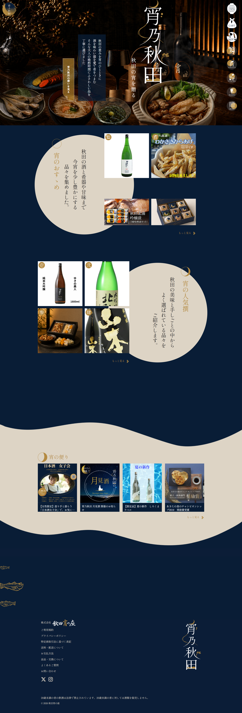

グループ制作 ECサイト（架空）- 宵乃秋田 -

| 使用技術 | HTML / CSS / JavaScript / PHP / WordPress / GIMP / Inkscape / Figma |
|---|---|
| 作業箇所 | blogページ WordPressでの実装 / ログインページ、新規会員登録ページ、ご購入手続きページ コーディング / blog記事投稿、アイキャッチ画像作成 / 等 |
| 制作期間 | 1ヶ月（2026年5月～6月） |
制作の概要・目的
職業訓練最後のグループ制作として、自分たちで考えたECサイトを作成。
30代～50代をターゲットにした、秋田の地酒やこだわりの肴（おつまみ）や贈り物を扱う大人向けECサイト。
今までのグループ制作はメインページ中心に制作しましたが、今回はサイトマップから流れを確認し、
ユーザーの購入動線を意識して、制作しました。
デザインのこだわり
-
高級感を生み出すカラー＆ビジュアル設計
「宵」をテーマに、ベースカラーには深く落ち着いた濃紺を採用し、アクセン トに上品なゴールドを合わせることで、夜の贅沢な晩酌の空間を表現しました。 メインビジュアルには、暗めのトーンでありながら秋田の名産品や、伝統料理、 お酒が美しく引き立つ写真を配置し、ユーザーを一瞬でブランドの世界観に引き込む工夫をしています。
成果と学び
-
Wordpressを活用した実装経験
授業でオリジナルテーマを作成した経験はありましたが、今回初めて一人でWordPress実装を担当しました。
PHPへの組み込みなど難しい部分では、調べながらAIも活用して実装を進め、試行錯誤を重ねながら完成させることができました。
この経験を通して、分からないことを調べながら実装する力と、新しい技術にも積極的に挑戦する姿勢を身につけることができました。 -
ユーザー目線を意識したサイト構成
サイトマップをもとにページ遷移や購入までの流れをグループ全員で確認し、
ユーザーが迷わず操作できるようにアコーディオンUIを採用しました。
必要な情報だけを展開できる構成にすることで、画面をすっきりと保ち、操作しやすさを意識しました。 -
グループ制作でのコミュニケーション
今回は役割分担が明確だったことで、自分の役割に責任を持ちながら制作を進めることができました。
一方で、メンバー同士で足りない部分は自然と補い合い、協力しながら完成を目指せたことから、チーム制作では役割を果たすだけでなく、お互いをサポートする姿勢の大切さを学びました。
最後には学校のサーバーへサイトを公開し、細かな表示や動作の確認・修正まで行うことができました。
公開までの一連の工程を経験できたことで、実際のWeb制作の流れへの理解が深まり、
今後の製作にも活かせる貴重な経験となりました。
※閲覧にはパスワードが必要です。
ユーザー名：tcs / パスワード：tcs